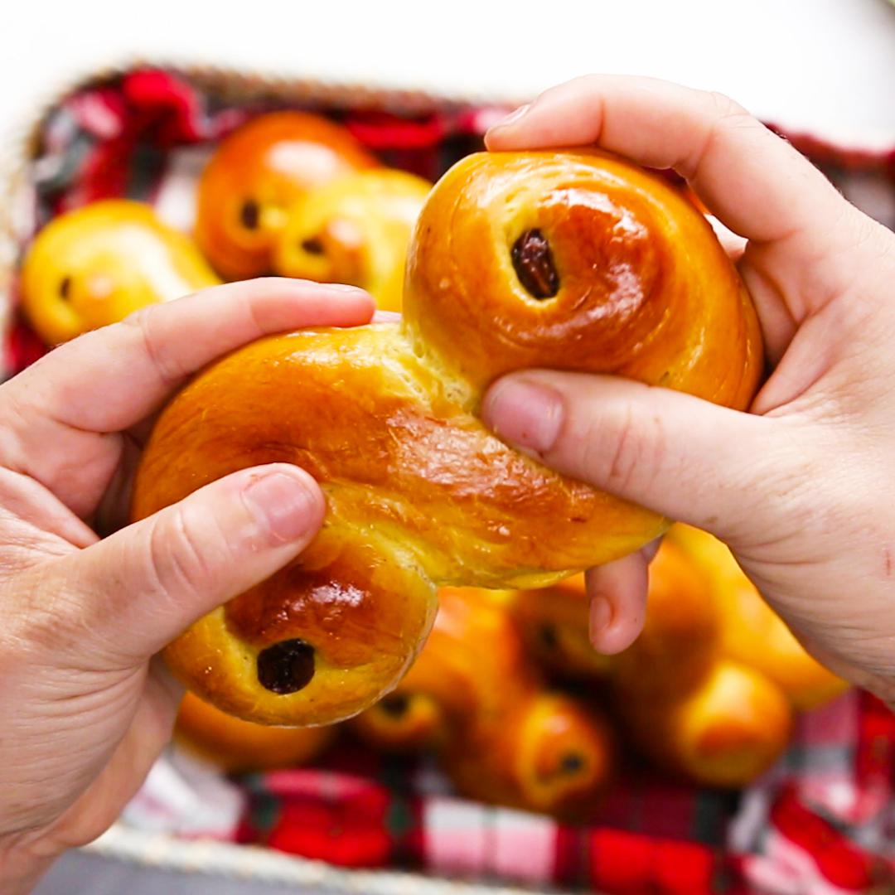

What is a saffron bun?
A saffron bun, Cornish tea treat bun or revel bun, is a rich,
spiced yeast-leavened sweet bun that is flavoured with saffron and
contains dried fruit including currants and raisins similar to a teacake.
The main ingredients are plain flour, butter, yeast, caster sugar, currants
and sultanas.[1] Larger versions baked in a loaf tin are known as saffron
cake.
Ingredients
- 0.4g jar saffron
- 250ml whole milk
- 90g clotted cream, plus extra to serve
- 50g butter
- 550g strong bread flour
- 1 tsp fine sea salt
- 50g caster sugar, plus 50g for the glaze
- 7g sachet fast-action yeast
- 1 tsp ground cinnamon
- 100g currents
Method
- Preheat the oven to 120°C, fan 100°C, gas 1/2.
Scatter the saffron strands on a baking sheet and place in the oven
for 15-20 minutes to dry out and darken in colour. Crush the strands
between your fingertips in a small bowl.
- Gently heat the milk in a small pan until it's steaming. Add the saffron to
the milk and leave to infuse for 20 minutes off the heat. Add the clotted
cream and diced butter to the saffron-infused milk and return to a low heat
for 2-3 minutes. Gently whisk until melted and combined. The mixture should
be just warm to the touch.
- Sift the flour into a large bowl and stir in the salt, sugar, yeast and cinnamon.
Make a well in the centre of the dry ingredients and pour in the warm milk. Mix
and bring together into a soft dough. Knead on a slow speed in a free-standing mixer
with the dough hook attached for 7-10 minutes, or by hand on a lightly floured
surface, incorporating the currants after 5 minutes. The dough should bounce back
when touched.
- Cover the bowl and leave in a warm place for 45-60 minutes or until doubled in size.
Knock back the dough, turn out onto a floured surface and knead briefly. Divide the
dough into 10 equal portions to make buns and place on a lined baking sheet.
- Cover the buns and leave to prove again for 30 minutes. Preheat the oven to 200°C,
fan 180°C, gas 6, then bake the buns for 20 minutes until golden. For the glaze,
put the 50g caster sugar and 2 tablespoons of water in a saucepan. Gently heat until
dissolved then boil for 1 minute before brushing over the warm buns. Transfer to a
wire rack and leave to cool.
- Slice in half and enjoy the buns fresh or toasted, spread with clotted cream or butter.